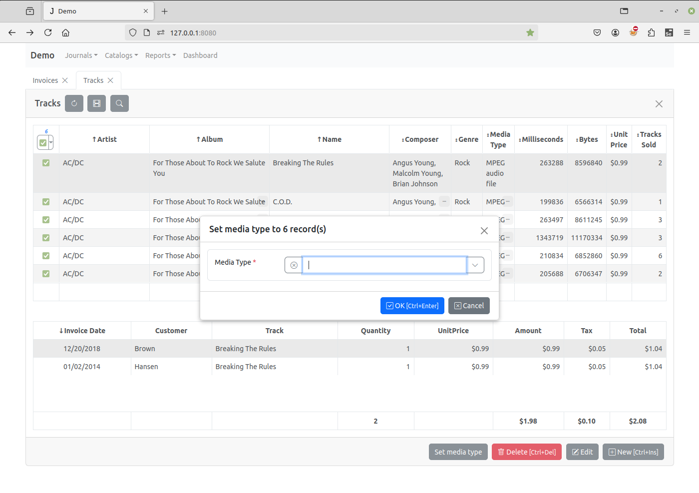

How change field value of selected records¶
In this example, we will show how to change the “Media Type” field of the “Tracks” catalog to the same value for the selected records.
First we set the multiselect attribute of the table_options to true to display the check box in the leftmost column of the “Tracks” table for the user to select the records and create the Set media type button in the on_view_form_created event handler in the client module of “Tracks”.
function on_view_form_created(item) {
item.table_options.multiselect = true;
item.add_view_button('Set media type').click(function() {
set_media_type(item);
});
}
When this button is pressed, the set_media_type function defined in the
module is executed.
In this function we create a copy of the “Tracks” item. We pass to the copy method the handlers option equal to false. It means that all the settings to the item made in the Form Dialogs in the Application Builder and all the functions and events defined in the client module of the item will be unavailable to the copy.
Then we analyze the selections attribute that is the array of the values of primary key field of the records, selected by the user.
After it we initialize the dataset of the copy by calling the open method with open_empty option. We also set the fields options so that the dataset will have only one field media_type. We set the required attribute of that field to true.
And finally, before calling the append_record method, we dynamically assign the on_edit_form_created event handler to change the on click event of the OK button, that was defined in the client module of the task.
In the new on click event handler we, first, call the post method to check that the media type value is set, if exception is raised we call edit method to allow the user to set it.
function set_media_type(item) {
var copy = item.copy({handlers: false}),
selections = item.selections;
if (selections.length > 1000) {
item.alert('Too many records selected.');
}
else if (selections.length || item.rec_count) {
if (selections.length === 0) {
selections = [item.id.value];
}
copy.open({fields: ['media_type'], open_empty: true});
copy.edit_options.title = 'Set media type to ' + selections.length +
' record(s)';
copy.edit_options.history_button = false;
copy.media_type.required = true;
copy.on_edit_form_created = function(c) {
c.edit_form.find('#ok-btn').off('click.task').on('click', function() {
try {
c.post();
item.server('set_media_type', [c.media_type.value, selections],
function(res, error) {
if (error) {
item.alert_error(error);
}
if (res) {
item.selections = [];
item.refresh_page(true);
c.cancel_edit();
item.alert(selections.length + '
record(s) have been modified.');
}
}
);
}
finally {
c.edit();
}
});
};
copy.append_record();
}
}
When the user clicks the OK button, the item’s
server
method executes the set_media_type function on the server, which changes the
field value of the selected records.
After changing the records on the server we, on the client, unselect the records, refresh the data of the page, cancel editing by calling the cancel_edit method and inform the user of the results.
def set_media_type(item, media_type, selections):
copy = item.copy()
copy.set_where(id__in=selections)
copy.open(fields=['id', 'media_type'])
for c in copy:
c.edit()
c.media_type.value = media_type
c.post()
c.apply()
return True